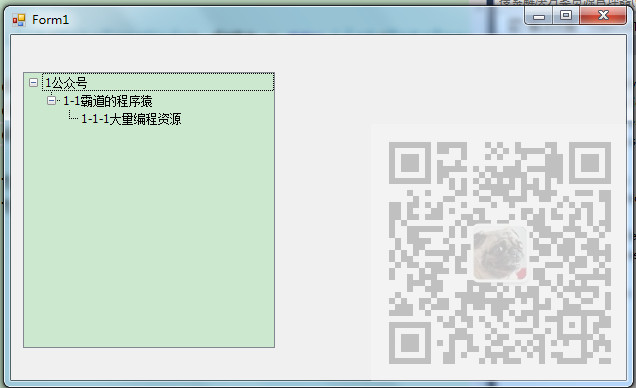

原文出处:本文由博客园博主霸道流氓提供。
原文连接:https://www.cnblogs.com/badaoliumangqizhi/p/11737850.html
原文连接:https://www.cnblogs.com/badaoliumangqizhi/p/11737850.html
场景
Winform控件-DevExpress18下载安装注册以及在VS中使用：
https://blog.csdn.net/BADAO_LIUMANG_QIZHI/article/details/100061243
在上面已经实现DevExpress的安装之后，拖拽一个TreeList，然后怎样给其设置数据源。
DevExpress的TreeList怎样设置数据源，从实例入手：
https://blog.csdn.net/BADAO_LIUMANG_QIZHI/article/details/102548490
参照上面进行设置数据源的过程。
如果要实现这样单列的树形结构应该怎样设置参数以及数据源。

注：
博客主页：
https://blog.csdn.net/badao_liumang_qizhi
关注公众号
霸道的程序猿
获取编程相关电子书、教程推送与免费下载。
实现
首先新建一个Winform程序，然后拖拽一个TreeList控件
然后双击进入窗体的加载事件中，如果在别的地方设置数据源同理。
首先进行TreeList样式等的设置
#region 设置列头、节点指示器面板、表格线样式
treeList1.OptionsView.ShowColumns = false; //隐藏列标头
treeList1.OptionsView.ShowIndicator = false; //隐藏节点指示器面板
treeList1.OptionsView.ShowHorzLines = false; //隐藏水平表格线
treeList1.OptionsView.ShowVertLines = false; //隐藏垂直表格线
treeList1.OptionsView.ShowIndentAsRowStyle = false;
#endregion
#region 初始禁用单元格选中，禁用整行选中
treeList1.OptionsView.ShowFocusedFrame = true; //设置显示焦点框
treeList1.OptionsSelection.EnableAppearanceFocusedCell = false; //禁用单元格选中
treeList1.OptionsSelection.EnableAppearanceFocusedRow = false; //禁用正行选中
#endregion
#region 设置TreeList的展开折叠按钮样式和树线样式
treeList1.OptionsView.ShowButtons = true; //显示展开折叠按钮
treeList1.LookAndFeel.UseDefaultLookAndFeel = false; //禁用默认外观与感觉
treeList1.LookAndFeel.UseWindowsXPTheme = true; //使用WindowsXP主题
treeList1.TreeLineStyle = DevExpress.XtraTreeList.LineStyle.Percent50; //设置树线的样式
#endregion
然后设置其单列显示
#region 添加单列
DevExpress.XtraTreeList.Columns.TreeListColumn colNode = new DevExpress.XtraTreeList.Columns.TreeListColumn();
colNode.Name = String.Format("col{0}", "NodeText");
colNode.Caption = "NodeText";
colNode.FieldName = "NodeText";
colNode.VisibleIndex = 0;
colNode.Visible = true;
colNode.OptionsColumn.AllowEdit = false; //是否允许编辑
colNode.OptionsColumn.AllowMove = false; //是否允许移动
colNode.OptionsColumn.AllowMoveToCustomizationForm = false; //是否允许移动至自定义窗体
colNode.OptionsColumn.AllowSort = false; //是否允许排序
colNode.OptionsColumn.FixedWidth = false; //是否固定列宽
colNode.OptionsColumn.ReadOnly = true; //是否只读
colNode.OptionsColumn.ShowInCustomizationForm = true; //移除列后是否允许在自定义窗体中显示
treeList1.Columns.Clear();
treeList1.Columns.AddRange(new DevExpress.XtraTreeList.Columns.TreeListColumn[] { colNode });
#endregion
注：
这里的FieldName 要与数据源中要显示的属性名相对应。
然后设置作为识别节点的主键字段，这里使用Id来区分标记每个节点；设置其父节点的标记属性。
treeList1.KeyFieldName = "Id";
treeList1.ParentFieldName = "ParentId";
为了构建数据源，我们需要新建一个DataTreeNode类
using System;
using System.Collections.Generic;
using System.Linq;
using System.Text;
using System.Threading.Tasks;
namespace TreeListTest
{
public class DataTreeNode
{
private string id;
private string parentId;
private string nodeText;
public string Id
{
get { return id; }
set { id = value; }
}
public string ParentId
{
get { return parentId; }
set { parentId = value; }
}
public string NodeText
{
get { return nodeText; }
set { nodeText = value; }
}
}
}
然后再回到上面构建数据源
DataTreeNode node1 = new DataTreeNode();
node1.Id = "1";
node1.ParentId = null;
node1.NodeText = "1公众号";
DataTreeNode node11 = new DataTreeNode();
node11.Id = "2";
node11.ParentId = "1";
node11.NodeText = "1-1霸道的程序猿";
DataTreeNode node111 = new DataTreeNode();
node111.Id = "3";
node111.ParentId = "2";
node111.NodeText = "1-1-1大量编程资源";
List<DataTreeNode> data = new List<DataTreeNode>();
data.Add(node1);
data.Add(node11);
data.Add(node111);
然后给TreeList设置数据源
treeList1.DataSource = data;
treeList1.RefreshDataSource();
最终完整的窗体加载方法代码
private void Form1_Load(object sender, EventArgs e)
{
#region 设置列头、节点指示器面板、表格线样式
treeList1.OptionsView.ShowColumns = false; //隐藏列标头
treeList1.OptionsView.ShowIndicator = false; //隐藏节点指示器面板
treeList1.OptionsView.ShowHorzLines = false; //隐藏水平表格线
treeList1.OptionsView.ShowVertLines = false; //隐藏垂直表格线
treeList1.OptionsView.ShowIndentAsRowStyle = false;
#endregion
#region 初始禁用单元格选中，禁用整行选中
treeList1.OptionsView.ShowFocusedFrame = true; //设置显示焦点框
treeList1.OptionsSelection.EnableAppearanceFocusedCell = false; //禁用单元格选中
treeList1.OptionsSelection.EnableAppearanceFocusedRow = false; //禁用正行选中
#endregion
#region 设置TreeList的展开折叠按钮样式和树线样式
treeList1.OptionsView.ShowButtons = true; //显示展开折叠按钮
treeList1.LookAndFeel.UseDefaultLookAndFeel = false; //禁用默认外观与感觉
treeList1.LookAndFeel.UseWindowsXPTheme = true; //使用WindowsXP主题
treeList1.TreeLineStyle = DevExpress.XtraTreeList.LineStyle.Percent50; //设置树线的样式
#endregion
#region 添加单列
DevExpress.XtraTreeList.Columns.TreeListColumn colNode = new DevExpress.XtraTreeList.Columns.TreeListColumn();
colNode.Name = String.Format("col{0}", "NodeText");
colNode.Caption = "NodeText";
colNode.FieldName = "NodeText";
colNode.VisibleIndex = 0;
colNode.Visible = true;
colNode.OptionsColumn.AllowEdit = false; //是否允许编辑
colNode.OptionsColumn.AllowMove = false; //是否允许移动
colNode.OptionsColumn.AllowMoveToCustomizationForm = false; //是否允许移动至自定义窗体
colNode.OptionsColumn.AllowSort = false; //是否允许排序
colNode.OptionsColumn.FixedWidth = false; //是否固定列宽
colNode.OptionsColumn.ReadOnly = true; //是否只读
colNode.OptionsColumn.ShowInCustomizationForm = true; //移除列后是否允许在自定义窗体中显示
treeList1.Columns.Clear();
treeList1.Columns.AddRange(new DevExpress.XtraTreeList.Columns.TreeListColumn[] { colNode });
#endregion
treeList1.KeyFieldName = "Id";
treeList1.ParentFieldName = "ParentId";
DataTreeNode node1 = new DataTreeNode();
node1.Id = "1";
node1.ParentId = null;
node1.NodeText = "1公众号";
DataTreeNode node11 = new DataTreeNode();
node11.Id = "2";
node11.ParentId = "1";
node11.NodeText = "1-1霸道的程序猿";
DataTreeNode node111 = new DataTreeNode();
node111.Id = "3";
node111.ParentId = "2";
node111.NodeText = "1-1-1大量编程资源";
List<DataTreeNode> data = new List<DataTreeNode>();
data.Add(node1);
data.Add(node11);
data.Add(node111);
treeList1.DataSource = data;
treeList1.RefreshDataSource();
}